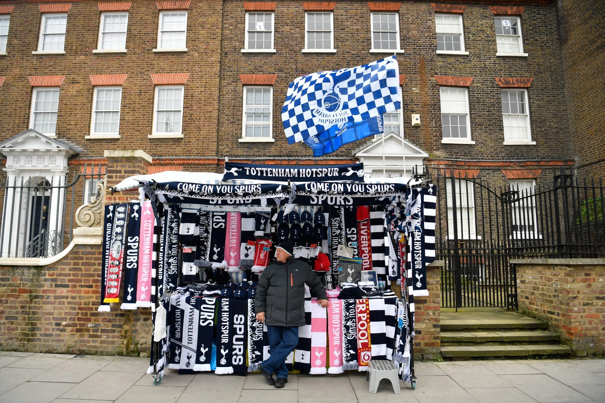

3 Football Without Fans Is Nothing. Until It’s Everything.
There is something unsettling about watching a soccer match played behind closed doors, in a stadium filled with echoes and air, rather than noise and life. The faces of the players, the jerseys they wear and the movements they make are all the same, of course, but the setting is so alien, so different, that a sense of dislocation sets in. It is sports in the uncanny valley.
Stadiums are curious places. Few are things of architectural wonder, though a handful take the breath away: the Stadium of Light in Lisbon, where Benfica’s eagle flies around the field before each game; Tottenham’s new home, still with that new paint feel; San Siro, Milan’s brutalist cathedral.
What lifts them, what makes them feel special, is the history etched into the walls, and the people that fill their stands. It is hard to find a good photograph of Signal Iduna Park, where Borussia Dortmund plays, when it is empty. It is impossible to take a bad one once the Südtribune is filled.

The Artemio Franchi in Florence is a soulless bowl when you walk past on a Tuesday morning, the most basic stadium design you could possibly imagine, as if the architects received only one instruction from their Fascist employers: Make it sort of round. But not too round. On a Sunday afternoon, though, with Fiorentina at home, it is a hazy riot of purple. Old Trafford is a spaceship in a dreary parking lot. Goodison Park looks like it is held together by glue.
Until, that is, they come to life. The presence of fans transforms these places into something to make the heart soar, and it transforms the games those fans come to watch. They lend the sport in front of them emotional resonance; remove them, and it becomes a strangely sterile experience, verging on pointless, slightly forlorn. Fans make soccer mean something.
It is an unappealing prospect, then, that it may be months before stadiums are filled again: some time in 2021, even by some of the most optimistic projections. The public health risks are just too great for the mass gathering of fans in stadiums and, just as significantly, for fans on their way to stadiums.
Indeed, for many, there is no point playing soccer again until people are allowed in to watch it. The slogan that has long been held up as a retort to the soccer business’ casual disregard of the paying spectator — football without fans is nothing — applies more literally than ever.
And yet, for all the sincerity and poignancy of that sentiment, for all that soccer without fans is not soccer as we know it at all, the fact that most of Europe’s major leagues are now steeling themselves to play behind closed doors for some time should not be dismissed as a decision only rooted in grubby convenience and thinly-veiled greed, a path chosen purely for the benefit of television. After all, the people watching on television are fans, too.
This is, for many, a delicate subject. There is, in general, are strict hierarchy among fans, one that conventional wisdom supports unquestioningly (and I am aware that contravening it may not be popular).
In this ranking, the best fans, the most devoted, are the ones who travel home and away with their team, spending hours and days on buses and trains, sacrificing everything for the love of their colors. Some of these are ultras by declaration, some only by inclination.
Just behind them are those who go to home games, the ones who make the commitment to build their weekends around their teams, who make soccer the centerpiece of their lives. Occasional match-goers get some kudos; those who turn up only for the big occasions a little less. Fans who only watch on television are some distance behind, derided, in some cases, as not true fans at all.
This is, though, an outdated model, one that applied when teams were local and tickets affordable, but much less so now. No matter how devoted, some fans may not be able to attend through geography. They may have family commitments that prevent them going. They may work on weekends. They may not have enough money for a match ticket, much less a season ticket, or neither the resources, the time or even the ability to travel.

When we say, then, that games are being staged for the benefit of television, what we mean is that games are being staged for the benefit of fans (most of whom) can only watch on television. Television is an abstract term, designed to obscure and stigmatize.
For most fans, and for all but a minuscule percentage for the major teams, it is the only way to consume soccer. It is also, of course, what keeps the whole thing rolling: those eye-watering television deals are only possible because of the subscriptions the broadcasters can raise, because of the advertising they can sell, because of the money that comes, at root, from fans.
Staging games behind closed doors is not ideal. It is not what anyone wants. It is, for want of a better term, worse than when the stands are full of noise and color, when there is unbridled joy at one end and unyielding despair at the other. But we are not in an ideal world these days. All we have are unpalatable choices.
There are many obstacles to overcome, yet, before soccer can return. It must be determined that it is safe for the players to train, and then to play. It must be decided that it will not place an unnecessary burden on an overstretched state. No game is worth a single life.
But having fans in place, in the stadium, should not be the bar. Football without fans is nothing. For now, though, those fans may have to be further away than they would like. It is, sadly, a sacrifice that has to be made.
The alternative to a few months of watching sports in the uncanny valley, after all, is bleaker still. The economic consequences of waiting for a perfect world are such that, by the time fans are allowed back into the stadiums, there may be nobody there on the field to watch.
In the Absence of Leadership, the Silence Is Filled
Javier Tebas, the man who runs La Liga, has given so many media briefings in recent weeks that we can only presume he carries a microphone in his pocket. Christian Seifert, his counterpart at the Bundesliga, has been clear on both the benefits and the pitfalls of Germany’s plan to restart soccer in the coming weeks. Aleksander Ceferin, the head of UEFA, has obliged interview requests from across the continent.
From the Premier League, though, the richest domestic soccer competition on the planet, the one that commands more viewers and more fans and creates more noise than any other, there has been only silence.
And in many ways, that is sensible. It is impossible to put a date on when soccer might return. It is a fool’s errand to try to second-guess a pandemic. Why set a target if you know you may not meet it? Better, the Premier League may have decided, to be cautious, to be patient, and not become a hostage to fortune.
Which would be fine, if soccer did not abhor a vacuum. And so, in the absence of clear leadership, the conversation over how — or if — to restart the Premier League season has become the preserve of the anonymous source: various executives, at various levels, pitching their ideas, the fruit of their imaginations, shaping the discussion to their own ends.
The Premier League, almost uniquely, seems to be incapable of speaking with one voice, of coming up with a collective solution to a collective problem. It is not a great sign, at the start of the greatest challenge in the organization’s 28-year history. There is a risk that, if the economic damage does not end its era of supremacy, its taste for self-interested squabbling might.
A Test of Commitment
When we asked for suggestions on subjects to cover during soccer’s indefinite shutdown, several of you wrote in asking for more coverage of the possible effect on the women’s game. With good reason, too: it is hard to avoid the feeling that at least some of the growth we have seen, especially in Europe, in the last few years is now at risk.
Partly, that is because so much of the conversation around how to restart is inherently, unconsciously, structurally, masculine. Compressing the rest of the season into a month or six weeks, for example? That’s fine for men’s teams, with their 25-player squads, but much more challenging for the women, who tend to have a smaller core of players at their disposal.
It is the other aspect, though, that is most troubling. In Europe, and in the National Women’s Soccer League in the United States (though less so), the trend in recent years has been for women’s and men’s teams to be conjoined: as divisions of the same club, though in practice they are often unequal partners. The men’s team tends to be the established priority; the women’s team, even a more accomplished one, is a subordinate.
That approach has largely been vindicated, though: The women’s game has grown steadily, and occasionally spectacularly, over the last decade or so. But it has always come with an obvious downside. Most women’s teams still rely in some way on the money that pours into the men’s game for funding; they are too often an afterthought when it comes to infrastructure; and tribal loyalties spill from men’s soccer into women’s, limiting each team’s appeal to fans.
Now, though, comes a real test. Many in the women’s game are fearful that, as clubs deal with contracting finances, the relatively meager amounts they direct to their women’s teams will be the first to go, seen as an easy way of redirecting cash to the favored child. Soccer as a whole is going to suffer the consequences of the virus, and the shutdown. The worry is that suffering, like everything else, may not be shared equally.